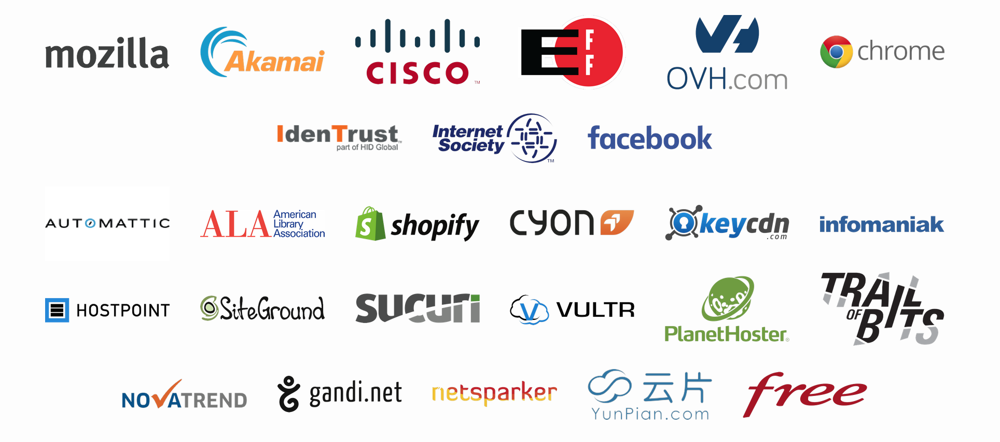

Un momento de reflexión historica

- En 1995, Netscape lanzó un browser con HTTPS
- Por primera vez, todo el mundo tenia fácil acceso a comunicaciones encriptadas
20 Años despues

- No hay suficiente HTTPS en Internet
La seguridad es importante

- Confidencialidad: Evitar que espien lo que estas haciendo
- Integridad: Prevenir que añadan publicidad o cookies de seguimiento
- Autenticidad: Estas hablando con el sitio real y no siendo parte de un ataque DDoS o estar recibiendo malware
Obtener un certificado es complicado

- Procesos manuales, diferentes para cada proovedor
- Primero tenes que solicitar un certificado…
- …despues tenes que entender como instalarlo
¿Por que es todo tan complicado?
- Los certificados son requeridos para tener un website seguro
- Las entidades que los venden quien hacer dinero
- Esto lleva a que sea caro, dificil y propietario
is a new certificate authority
Una CA gratis

Cosas que no importan:
- Que puedas pagarlo
- El lugar donde vivas
- Que seas un individuo, una organización o una corporación
Un CA Automatizado

- La mayor parte del trabajo en emitir un certificado es verificar que tengas control sobre el dominio
- Let's Encrypt usa un procotolo estándar para verificar el control sobre el dominio previamente a generar el certificado
- La renovación de este certificado usa el mismo proceso
Automated Certificate Management Environment (ACME - Entorno de Administración Automatica de Certificados)
- Imaginemos que alguien solicita un certificado para ejemplo.com
- Como sabemos que efectivamente posee ejemplo.com?
Validación del dominio
Dar un desafio que solo el
dueñoo del dominio pueda completar:
- Crear un registro DNS para
_acme-challenge.ejemplo.com - Poner un archivo en
http://example.com/.well-known/acme-challenge/ - Configurar un servidor TLS en ejemplo.com
Validación automática
- Todo el proceso esta detallado en la especificación de ACME
- Como solicitar autorización
- Como completar los desafios
- Como solicitar los certificados
- Tener un protocolo estándar significa que podes construir herramientas
- La visión de ACME es estar integrado en los servidores web para auto-configurar HTTPS
Un CA transparente
Todos los certificados son registrados publicamente a través
de el sistema Certificate Transparency
Un CA Abierto
Todo lo que usa Let's Encrypt es Open Source:

- El software que ejecuta la autoridad certificante
- El software que usas para obtener un certificado
- Incluso esta presentación!
- Que por cierto es un fork de esta otra presentación
¡Se agradecen los Pull requests y forks!
Una CA Cooperativa
- Amplio apoyo de la industria
- Desarrollado y soportado por la comunidad
- Construye un estándar abierto para todas las CAs
Integración con distintas plataformas
Un estándar en proceso

- El protocolo ACME se encuentra en proceso de estandarización por la IETF para que pueda ser usado por todas las CAs
- La ayuda a usuarios se realiza mediante un sistema de soporte comunitario
El futuro
¡Esta linea sigue creciendo!

Solo el comienzo…
- Disponible para el publico general desde el 3 de diciembre de 2015 y ya es el 5to proveedor de certificados más grande
- Lograr que todos los sitios usen HTTPS
- Asegurar todo internet: email, chat, ¡y más!
Un mensaje para el mundo